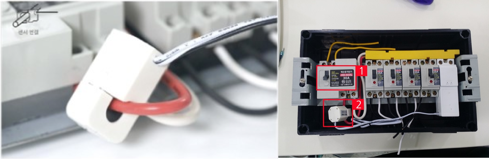
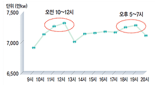
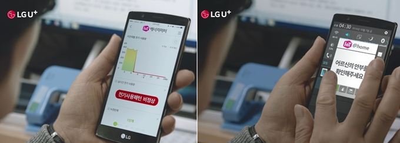
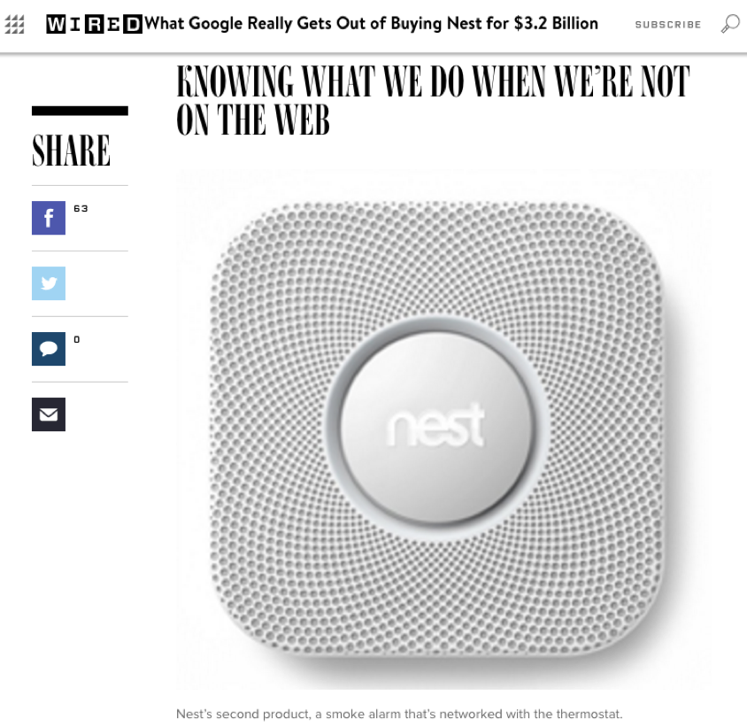
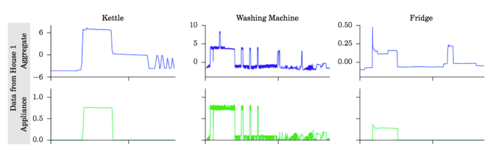
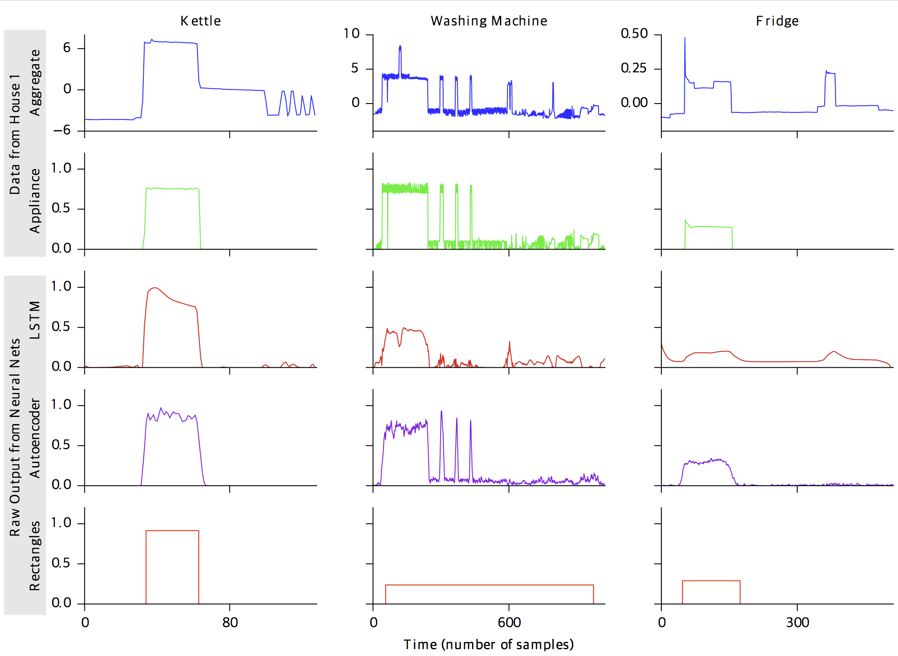
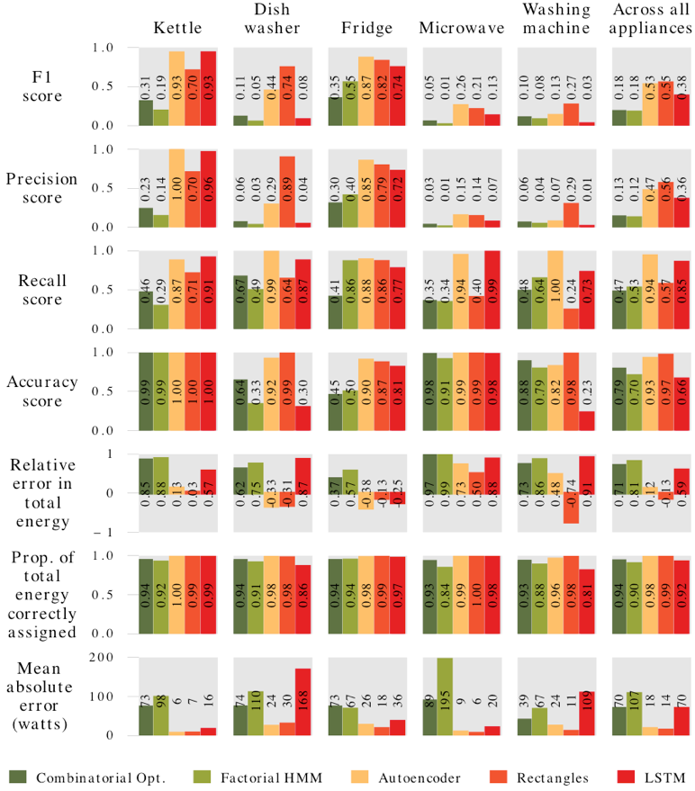
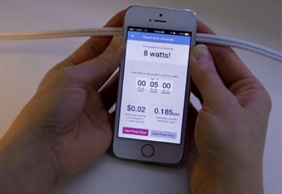

Power Disaggregation
전력분리기술
김설기
Power Disaggregation
”집안으로 들어가는 전압과 전류의 변화를 분석하여,
가전의 사용여부 및 개별 전기소비량을 추론하는 프로세스”
영문 Wikipedia 번역
다른 이름 : NonIntrusive Load Montioring, NILM

활용 예시
Sense활용 예시
Smart Meter
common questions
Q. 개별가전에 센서나 플러그를 달면 되는 것 아닌가?
실제로 에너지 절약 등의 목적으로 센서가 들어가고 있음 (Smart Energy Profile 등)
A. Yes, 그러나 당장은 어려움.
common questions
Q. 가전분리해서 뭐할래?
A1. 에너지 절약/효율화, 수요피크 관리

Q. 가전분리해서 뭐할래?
A2. 기기 이상감지,
안전 등
A3. offline user behavior
- 광고와 연계
- 재실/수면 탐지
- "몇일 연속으로 집에서 조리하여 식사를 하셨네요. 오늘 저녁 외식 어떠세요?"
- TV 시청패턴 (이 경우는 IPTV가 더..)
A3. offline user behavior
Google 의 Nest 인수
알고리즘
To-Be 결과물

Data for Supervised Learning
"일부 가정"에서 스마트플러그를 이용하여 정답셋 수집

데이터셋
각 가전의 signature 를 이용하여 학습
알고리즘적 특징
- 기본적으로 Classification in Time Series Data
- Speech Recognition 과 대략 연관
- HMM, RNN, LSTM
- 여러대의 가전이 동시에 작동하는 것이 일반적
- More close to Multi-speaker Identification
- Quick approach : 각 가전별 detector
Supervised Learning for NILM
- HMM
- GBDT (XGBoost)
- Deep Learning
Deep Learning for NILM
Jack Kelly's Neural NILMExample Output
아직 만족스럽지 못한 결과
Framework
NILM with Lower Frequency Data in Cloud Server (~100 Hz) - Most Services
VS
On-Device NILM with Higher Frequency Data (KHz/MHz) - Sense
Other Possibiility of Power Disaggregation?
- Use of smartphone's magnetic sensor

Challenges
- 미지의 가전
- 미지의 가전구성
- 태양광 등 발전시설
- 실시간 서비스
Challenges as Service
- 사용 시나리오 개발
- Privacy Issue